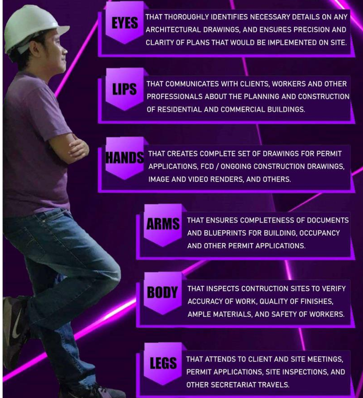
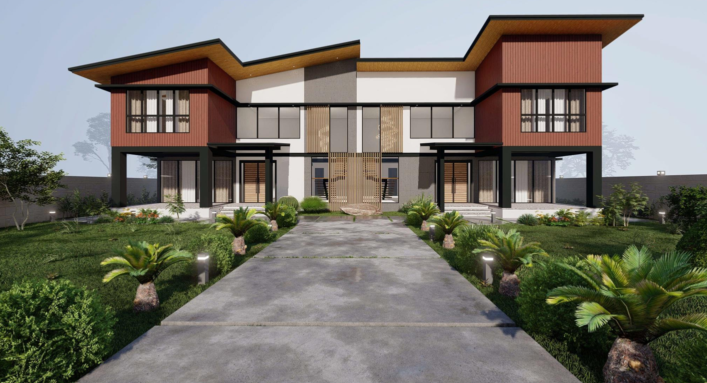
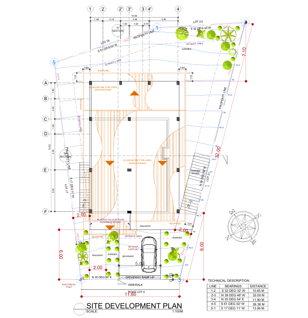

Haven of Angels Memorial Chapels and Crematorium
A featured project showcasing architectural planning, documentation, and presentation work for a memorial chapel and crematorium development.
Licensed Architect and Master Plumber based in Taytay, Rizal with three years of experience across residential, commercial, and institutional projects. Focused on architectural design, complete construction documentation, permit processing, site supervision, and clear coordination from planning to turnover.
Taytay, Rizal
0976 631 9282
joashsolon01@gmail.com

A featured project showcasing architectural planning, documentation, and presentation work for a memorial chapel and crematorium development.

A residential portfolio project highlighting design development, construction documentation, and polished visual communication for client presentation.

A project focused on coordinated architectural output, presentation clarity, and practical design support from concept through documentation.
What your team might need from an architect is not just design sense, but dependable execution. These are the practical strengths Joash brings into project planning, documentation, coordination, and construction support.
Thoroughly identifies necessary details in architectural drawings and ensures the precision and clarity of plans that will be implemented on site.
Communicates with clients, workers, and fellow professionals about the planning and construction of residential and commercial buildings.
Creates complete drawing sets for permit applications, FCD and ongoing construction drawings, image renders, video renders, and related deliverables.
Ensures completeness of documents and blueprints for building, occupancy, and other permit applications.
Inspects construction sites to verify accuracy of work, quality of finishes, sufficiency of materials, and the safety of workers.
Attends client meetings, site meetings, permit applications, site inspections, and other coordination work that keeps projects moving.
For architectural design work, documentation support, permit processing, rendering, or site coordination, feel free to get in touch.